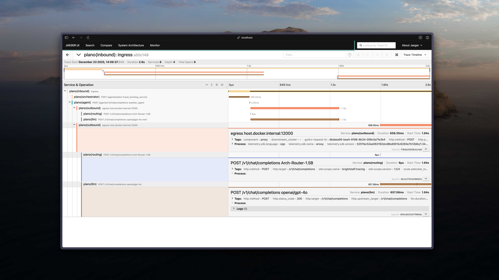

Tracing
Overview
OpenTelemetry is an open-source observability framework providing APIs and instrumentation for generating, collecting, processing, and exporting telemetry data, such as traces, metrics, and logs. Its flexible design supports a wide range of backends and seamlessly integrates with modern application tools. A key feature of OpenTelemetry is its commitment to standards like the W3C Trace Context
Tracing is a critical tool that allows developers to visualize and understand the flow of requests in an AI application. With tracing, you can capture a detailed view of how requests propagate through various services and components, which is crucial for debugging, performance optimization, and understanding complex AI agent architectures like Co-pilots.
Plano propagates trace context using the W3C Trace Context standard, specifically through the
traceparent header. This allows each component in the system to record its part of the request
flow, enabling end-to-end tracing across the entire application. By using OpenTelemetry, Plano ensures
that developers can capture this trace data consistently and in a format compatible with various observability
tools.
{kind=link}

Understanding Plano Traces
Plano creates structured traces that capture the complete flow of requests through your AI system. Each trace consists of multiple spans representing different stages of processing.
Inbound Request Handling
When a request enters Plano, it creates an inbound span (plano(inbound)) that represents the initial request reception and processing. This span captures:
HTTP request details (method, path, headers)
Request payload size
Initial validation and authentication
Orchestration & Routing
For agent systems, Plano performs intelligent routing through orchestration spans:
Agent Orchestration (
plano(orchestrator)): When multiple agents are available, Plano uses an LLM to analyze the user’s intent and select the most appropriate agent. This span captures the orchestration decision-making process.LLM Routing (
plano(routing)): For direct LLM requests, Plano determines the optimal endpoint based on your routing strategy (round-robin, least-latency, cost-optimized). This span includes:Routing strategy used
Selected upstream endpoint
Route determination time
Fallback indicators (if applicable)
Agent Processing
When requests are routed to agents, Plano creates spans for agent execution:
Agent Filter Chains (
plano(filter)): If filters are configured (guardrails, context enrichment, query rewriting), each filter execution is captured in its own span, showing the transformation pipeline.Agent Execution (
plano(agent)): The main agent processing span that captures the agent’s work, including any tools invoked and intermediate reasoning steps.
Outbound LLM Calls
All LLM calls—whether from Plano’s routing layer or from agents—are traced with LLM spans (plano(llm)) that capture:
Model name and provider (e.g.,
gpt-4,claude-3-sonnet)Request parameters (temperature, max_tokens, top_p)
Token usage (prompt_tokens, completion_tokens)
Streaming indicators and time-to-first-token
Response metadata
Example Span Attributes:
# LLM call span
llm.model = "gpt-4"
llm.provider = "openai"
llm.usage.prompt_tokens = 150
llm.usage.completion_tokens = 75
llm.duration_ms = 1250
llm.time_to_first_token = 320
Handoff to Upstream Services
When Plano forwards requests to upstream services (agents, APIs, or LLM providers), it creates handoff spans (plano(handoff)) that capture:
Upstream endpoint URL
Request/response sizes
HTTP status codes
Upstream response times
This creates a complete end-to-end trace showing the full request lifecycle through all system components.
Behavioral Signals in Traces
Plano automatically enriches OpenTelemetry traces with Signals™ — lightweight, model-free behavioral indicators organized into three layers (interaction, execution, environment) per Chen et al., 2026. Signals are attached as span attributes and per-instance span events, providing immediate visibility into interaction quality.
What Signals Provide
Signals act as early warning indicators embedded in your traces:
Quality Assessment: Overall interaction quality (
excellent/good/neutral/poor/severe) and numeric scoreInteraction layer: misalignment, stagnation, disengagement, satisfaction
Execution layer: tool failures and loop patterns (from
function_call/observationtraces)Environment layer: exhaustion (API errors, timeouts, rate limits, context overflow)
Visual Flag Markers
When concerning signals are detected (disengagement, execution failures / loops, stagnation > 2, or poor / severe quality), Plano automatically appends a 🚩 marker to the span’s operation name. This makes problematic traces immediately visible in your tracing UI without requiring additional queries.
Example Span with Signals:
# Span name: "POST /v1/chat/completions gpt-4 🚩"
# Standard LLM attributes:
llm.model = "gpt-4"
llm.usage.total_tokens = 225
# Top-level signal attributes:
signals.quality = "severe"
signals.quality_score = 0.0
signals.turn_count = 15
signals.efficiency_score = 0.234
# Layered attributes (only non-zero categories are emitted):
signals.interaction.misalignment.count = 4
signals.interaction.misalignment.severity = 2
signals.interaction.disengagement.count = 5
signals.interaction.disengagement.severity = 3
# Per-instance span event:
event: signal.interaction.disengagement.escalation
signal.type = "interaction.disengagement.escalation"
signal.message_index = 14
signal.confidence = 1.0
signal.snippet = "get me a human"
Querying Signal Data
In your observability platform (Jaeger, Grafana Tempo, Datadog, etc.), filter traces by signal attributes:
Find severe interactions:
signals.quality = "severe"Find disengaged users:
signals.interaction.disengagement.severity >= 2Find misaligned interactions:
signals.interaction.misalignment.count > 3Find tool failures:
signals.execution.failure.count > 0Find external issues:
signals.environment.exhaustion.count > 0Find inefficient flows:
signals.efficiency_score < 0.5
For complete details on all 20 leaf signal types, severity scheme, legacy attribute deprecation, and best practices, see the Signals™ guide.
Custom Span Attributes
Plano can automatically attach custom span attributes derived from request headers and static attributes defined in configuration. This lets you stamp traces with identifiers like workspace, tenant, or user IDs without changing application code or adding custom instrumentation.
Why This Is Useful
Tenant-aware debugging: Filter traces by
workspace.idortenant.id.Customer-specific visibility: Attribute performance or errors to a specific customer.
Low overhead: No code changes in agents or clients—just headers.
How It Works
You configure one or more header prefixes. Any incoming HTTP header whose name starts with one of these prefixes is captured as a span attribute. You can also provide static attributes that are always injected.
The prefix is only for matching, not the resulting attribute key.
The attribute key is the header name with the prefix removed, then hyphens converted to dots.
Note
Custom span attributes are attached to LLM spans when handling /v1/... requests via llm_chat. For orchestrator requests to /agents/...,
these attributes are added to both the orchestrator selection span and to each agent span created by agent_chat.
Example
Configured prefix:
tracing:
span_attributes:
header_prefixes:
- x-katanemo-
Incoming headers:
X-Katanemo-Workspace-Id: ws_123
X-Katanemo-Tenant-Id: ten_456
Resulting span attributes:
workspace.id = "ws_123"
tenant.id = "ten_456"
Configuration
Add the prefix list under tracing in your config:
tracing:
random_sampling: 100
span_attributes:
header_prefixes:
- x-katanemo-
static:
environment: production
service.version: "1.0.0"
Static attributes are always injected alongside any header-derived attributes. If a header-derived attribute key matches a static key, the header value overrides the static value.
You can provide multiple prefixes:
tracing:
span_attributes:
header_prefixes:
- x-katanemo-
- x-tenant-
static:
environment: production
service.version: "1.0.0"
Notes and Examples
Prefix must match exactly:
katanemo-does not matchx-katanemo-headers.Trailing dash is recommended: Without it,
x-katanemowould also matchx-katanemo-fooandx-katanemofoo.Keys are always strings: Values are captured as string attributes.
Prefix mismatch example
Config:
tracing:
span_attributes:
header_prefixes:
- x-katanemo-
Request headers:
X-Other-User-Id: usr_999
Result: no attributes are captured from X-Other-User-Id.
Benefits of Using Traceparent Headers
Standardization: The W3C Trace Context standard ensures compatibility across ecosystem tools, allowing traces to be propagated uniformly through different layers of the system.
Ease of Integration: OpenTelemetry’s design allows developers to easily integrate tracing with minimal changes to their codebase, enabling quick adoption of end-to-end observability.
Interoperability: Works seamlessly with popular tracing tools like AWS X-Ray, Datadog, Jaeger, and many others, making it easy to visualize traces in the tools you’re already usi
How to Initiate A Trace
Enable Tracing Configuration: Simply add the
random_samplingintracingsection to 100`` flag to in the listener configTrace Context Propagation: Plano automatically propagates the
traceparentheader. When a request is received, Plano will:Generate a new
traceparentheader if one is not present.Extract the trace context from the
traceparentheader if it exists.Start a new span representing its processing of the request.
Forward the
traceparentheader to downstream services.
Sampling Policy: The 100 in
random_sampling: 100means that all the requests as sampled for tracing. You can adjust this value from 0-100.
Tracing with the CLI
The Plano CLI ships with a local OTLP/gRPC listener and a trace viewer so you can inspect spans without wiring a full observability backend. This is ideal for development, debugging, and quick QA.
Quick Start
You can enable tracing in either of these ways:
Start the local listener explicitly:
$ planoai trace listen
Or start Plano with tracing enabled (auto-starts the local OTLP listener):
$ planoai up --with-tracing
# Optional: choose a different listener port
$ planoai up --with-tracing --tracing-port 4318
Send requests through Plano as usual. The listener accepts OTLP/gRPC on:
0.0.0.0:4317(default)
View the most recent trace:
$ planoai trace
Inspect and Filter Traces
List available trace IDs:
$ planoai trace --list
Open a specific trace (full or short trace ID):
$ planoai trace 7f4e9a1c
$ planoai trace 7f4e9a1c0d9d4a0bb9bf5a8a7d13f62a
Filter by attributes and time window:
$ planoai trace --where llm.model=gpt-4o-mini --since 30m
$ planoai trace --filter "http.*" --limit 5
Return JSON for automation:
$ planoai trace --json
$ planoai trace --list --json
Show full span attributes (disable default compact view):
$ planoai trace --verbose
$ planoai trace -v
Point the CLI at a different local listener port:
$ export PLANO_TRACE_PORT=50051
$ planoai trace --list
Notes
--whereaccepts repeatablekey=valuefilters and uses AND semantics.--filtersupports wildcards (*) to limit displayed attributes.--no-interactivedisables prompts when listing traces.By default, inbound/outbound spans use a compact attribute view.
Trace Propagation
Plano uses the W3C Trace Context standard for trace propagation, which relies on the traceparent header.
This header carries tracing information in a standardized format, enabling interoperability between different
tracing systems.
Header Format
The traceparent header has the following format:
traceparent: {version}-{trace-id}-{parent-id}-{trace-flags}
{version}: The version of the Trace Context specification (e.g.,00).{trace-id}: A 16-byte (32-character hexadecimal) unique identifier for the trace.{parent-id}: An 8-byte (16-character hexadecimal) identifier for the parent span.{trace-flags}: Flags indicating trace options (e.g., sampling).
Instrumentation
To integrate AI tracing, your application needs to follow a few simple steps. The steps below are very common practice, and not unique to Plano, when you reading tracing headers and export spans for distributed tracing.
Read the
traceparentheader from incoming requests.Start new spans as children of the extracted context.
Include the
traceparentheader in outbound requests to propagate trace context.Send tracing data to a collector or tracing backend to export spans
Example with OpenTelemetry in Python
Install OpenTelemetry packages:
$ pip install opentelemetry-api opentelemetry-sdk opentelemetry-exporter-otlp
$ pip install opentelemetry-instrumentation-requests
Set up the tracer and exporter:
from opentelemetry import trace
from opentelemetry.exporter.otlp.proto.grpc.trace_exporter import OTLPSpanExporter
from opentelemetry.instrumentation.requests import RequestsInstrumentor
from opentelemetry.sdk.resources import Resource
from opentelemetry.sdk.trace import TracerProvider
from opentelemetry.sdk.trace.export import BatchSpanProcessor
# Define the service name
resource = Resource(attributes={
"service.name": "customer-support-agent"
})
# Set up the tracer provider and exporter
tracer_provider = TracerProvider(resource=resource)
otlp_exporter = OTLPSpanExporter(endpoint="otel-collector:4317", insecure=True)
span_processor = BatchSpanProcessor(otlp_exporter)
tracer_provider.add_span_processor(span_processor)
trace.set_tracer_provider(tracer_provider)
# Instrument HTTP requests
RequestsInstrumentor().instrument()
Handle incoming requests:
from opentelemetry import trace
from opentelemetry.propagate import extract, inject
import requests
def handle_request(request):
# Extract the trace context
context = extract(request.headers)
tracer = trace.get_tracer(__name__)
with tracer.start_as_current_span("process_customer_request", context=context):
# Example of processing a customer request
print("Processing customer request...")
# Prepare headers for outgoing request to payment service
headers = {}
inject(headers)
# Make outgoing request to external service (e.g., payment gateway)
response = requests.get("http://payment-service/api", headers=headers)
print(f"Payment service response: {response.content}")
Integrating with Tracing Tools
AWS X-Ray
To send tracing data to AWS X-Ray :
Configure OpenTelemetry Collector: Set up the collector to export traces to AWS X-Ray.
Collector configuration (
otel-collector-config.yaml):receivers: otlp: protocols: grpc: processors: batch: exporters: awsxray: region: <Your-Aws-Region> service: pipelines: traces: receivers: [otlp] processors: [batch] exporters: [awsxray]Deploy the Collector: Run the collector as a Docker container, Kubernetes pod, or standalone service.
Ensure AWS Credentials: Provide AWS credentials to the collector, preferably via IAM roles.
Verify Traces: Access the AWS X-Ray console to view your traces.
Datadog
Datadog
To send tracing data to Datadog:
Configure OpenTelemetry Collector: Set up the collector to export traces to Datadog.
Collector configuration (
otel-collector-config.yaml):receivers: otlp: protocols: grpc: processors: batch: exporters: datadog: api: key: "${<Your-Datadog-Api-Key>}" site: "${DD_SITE}" service: pipelines: traces: receivers: [otlp] processors: [batch] exporters: [datadog]Set Environment Variables: Provide your Datadog API key and site.
$ export <Your-Datadog-Api-Key>=<Your-Datadog-Api-Key> $ export DD_SITE=datadoghq.com # Or datadoghq.euDeploy the Collector: Run the collector in your environment.
Verify Traces: Access the Datadog APM dashboard to view your traces.
Langtrace
Langtrace is an observability tool designed specifically for large language models (LLMs). It helps you capture, analyze, and understand how LLMs are used in your applications including those built using Plano.
To send tracing data to Langtrace:
Configure Plano: Make sure Plano is installed and setup correctly. For more information, refer to the installation guide.
Install Langtrace: Install the Langtrace SDK.:
$ pip install langtrace-python-sdkSet Environment Variables: Provide your Langtrace API key.
$ export LANGTRACE_API_KEY=<Your-Langtrace-Api-Key>Trace Requests: Once you have Langtrace set up, you can start tracing requests.
Here’s an example of how to trace a request using the Langtrace Python SDK:
import os from langtrace_python_sdk import langtrace # Must precede any llm module imports from openai import OpenAI langtrace.init(api_key=os.environ['LANGTRACE_API_KEY']) client = OpenAI(api_key=os.environ['OPENAI_API_KEY'], base_url="http://localhost:12000/v1") response = client.chat.completions.create( model="gpt-4o-mini", messages=[ {"role": "system", "content": "You are a helpful assistant"}, {"role": "user", "content": "Hello"}, ] ) print(chat_completion.choices[0].message.content)Verify Traces: Access the Langtrace dashboard to view your traces.
Best Practices
Consistent Instrumentation: Ensure all services propagate the
traceparentheader.Secure Configuration: Protect sensitive data and secure communication between services.
Performance Monitoring: Be mindful of the performance impact and adjust sampling rates accordingly.
Error Handling: Implement proper error handling to prevent tracing issues from affecting your application.
Summary
By leveraging the traceparent header for trace context propagation, Plano enables developers to implement
tracing efficiently. This approach simplifies the process of collecting and analyzing tracing data in common
tools like AWS X-Ray and Datadog, enhancing observability and facilitating faster debugging and optimization.
Additional Resources
For full command documentation (including planoai trace and all other CLI commands), see CLI Reference.
External References
Note
Replace placeholders such as <Your-Aws-Region> and <Your-Datadog-Api-Key> with your actual configurations.